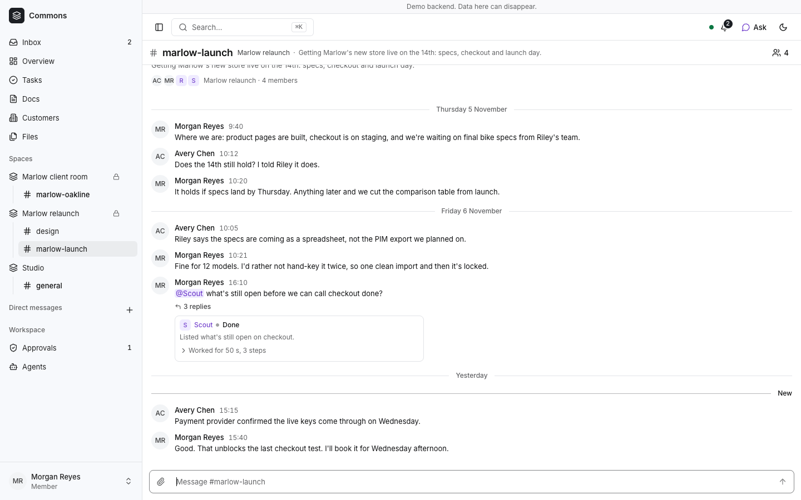
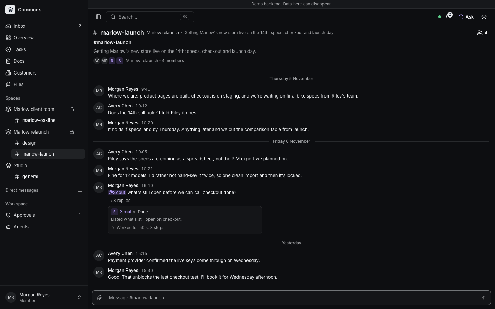
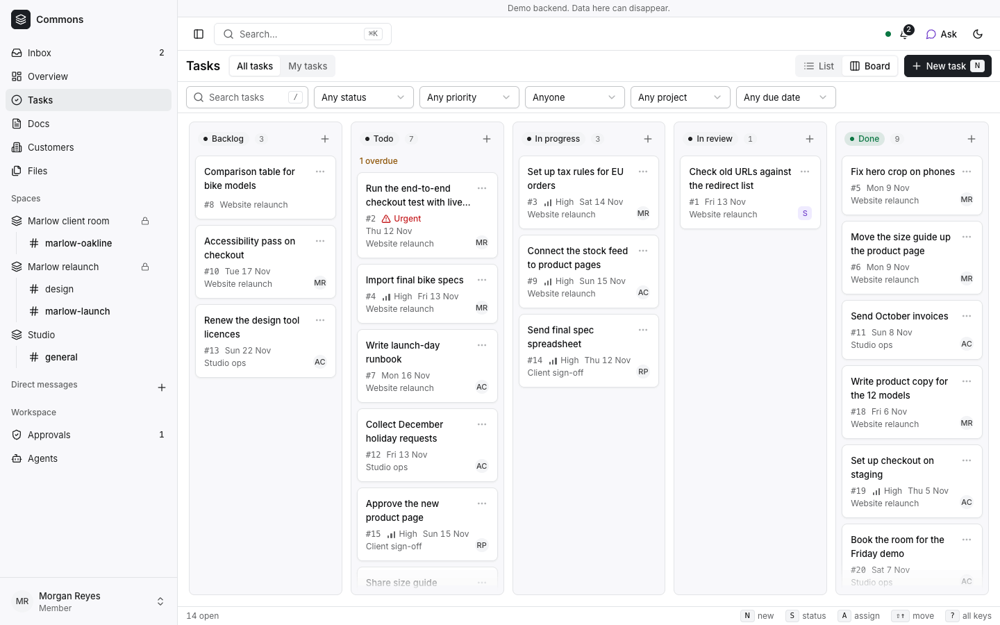
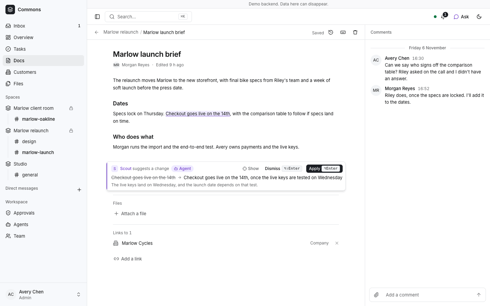

Chat, tasks, docs, customers and files for a small team, with AI agents that work as members and ask before they act.




Commons is Xano's flagship team workspace. A small team can trial it with real work, and build on its code. It doesn't replace Slack or Linear: it leaves out email, import and live co-typing, among other things the README lists.
Each agent has a name, a sponsor and the same access as a person. Hosted agents run on Xano. Connected agents, such as Claude Code, run on your machine.
Anything a guest would read waits for a person. The card shows the exact words and who will read them, with Approve, Edit and Decline.
Every route, tool, search, inbox and live channel asks the same rule. A record you can't reach answers "Not found", in every tool.
Clone it, then run it on your machine with no account, or on a cloud link for ChatGPT and Claude. No model key is needed for the demo.
git clone https://github.com/xano-community/commons-team-workspace
cd commons-team-workspace
npm install
npm run xano:deploy # deploys and seeds on the Xano Engine on your machine
npm run dev # opens the app, then click "Continue as Morgan Reyes"For a cloud link that works with ChatGPT and Claude:
npx @xano/sdk login
npm run xano:deploy:ephemeralTo let hosted agents run, set a model key on the running backend. It applies with no redeploy:
printf %s "$KEY" | npx @xano/sdk env set ANTHROPIC_API_KEYPaste this to a coding agent to explore how access works:
Clone https://github.com/xano-community/commons-team-workspace and read it.
It is a Xano backend (TypeScript, @xano/sdk) with a React frontend. The one
access rule is in xano/function/access/reach.ts, the agent tools are in
xano/agents/tools.ts, and xano/approvals.ts says what asks a person first.
Explain how a hosted agent's request to post in a guest's space waits for
approval, and walk me through the README's "Add a record type" steps.| Role | Can | Cannot |
|---|---|---|
admin | Manage the team, see every space in a browser, change the pipeline | Read DMs they're not in |
member | Make spaces, work in the spaces they join, open customers | Manage the team, see spaces they haven't joined |
guest | Work in the spaces they're invited to | Open customers, use the assistant, see the team |
agent | What its spaces and tools allow, with a person as sponsor | Hold any other role, or reach a space it hasn't joined |
Every route needs a signed-in token, except sign-in and first-admin setup. Access is checked at the API layer by one rule, not by row-level security.
| Group | Covers | Enforces |
|---|---|---|
api:messaging | Channels, DMs, threads, messages | DMs for their members only. A retried send lands once |
api:tasks | Tasks, projects, saved views | The space rule |
api:docs, api:doc-tools | Docs, versions, suggestions | The space rule. An archived space is read-only |
api:crm | Companies, contacts, deals, notes, stages | crm.read to open, admins for stages |
api:files | Uploads, downloads, attachments | The record's rule, on every download |
api:links, api:search | Links, mention checks, search | Results and counts only from what you reach |
api:agents, api:approvals | Agents, keys, runs, approvals | Sponsors and admins manage agents. Approvers decide |
An MCP server gives agents 11 tools, under the same rules a person meets. Each agent key is scoped, expires, can be revoked, and every call is logged.
my_inbox, search, read_record, check_approval (read)post_message, save_task, save_doc, save_crm_record, save_file, report_progress (write; anything a guest would see waits for a person)request_action (asks a person first: delete, bulk change, export, join a space, change a role)